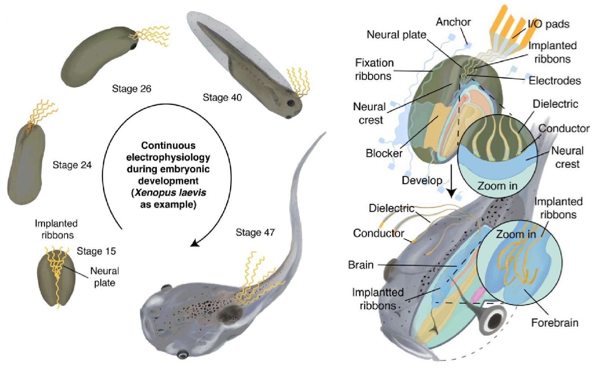
Research
Build tools. Understand change. Guide intervention.
Adaptive interfaces
Neural trajectories
Informed modulation
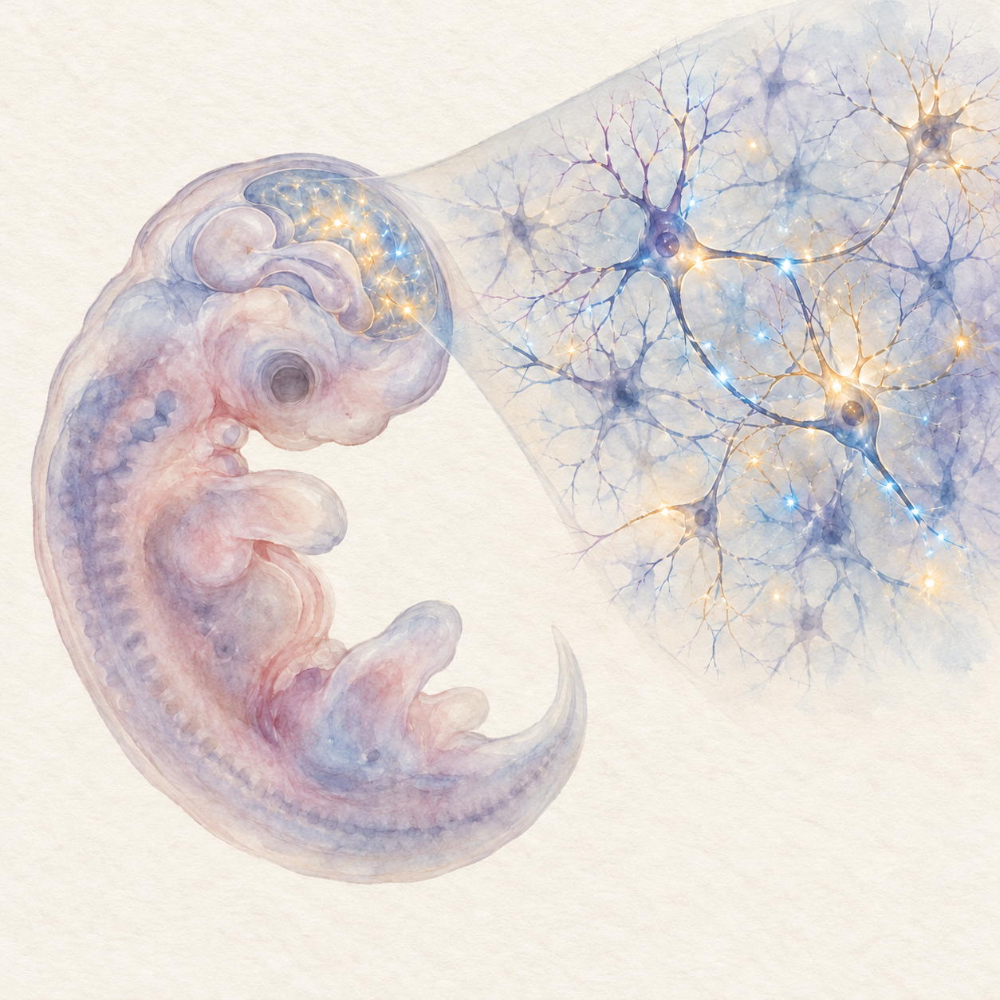
Map changing living tissues
How can electronic interfaces remain connected as living tissues change?
Related work
1 / 5
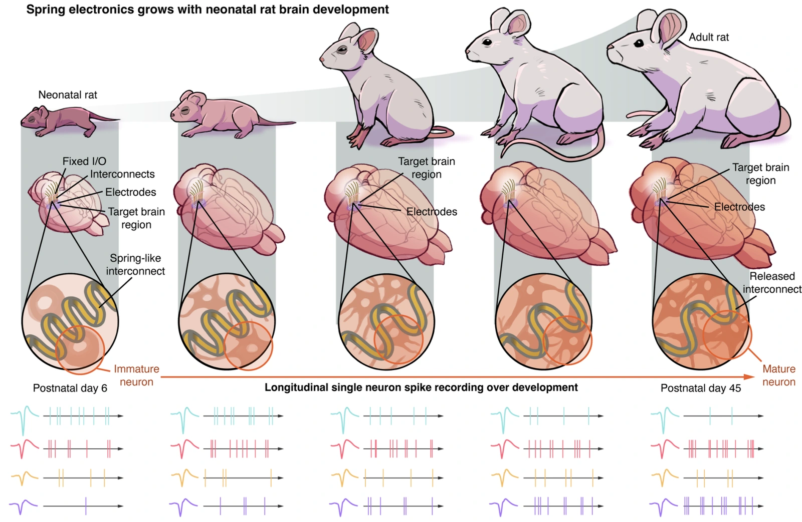
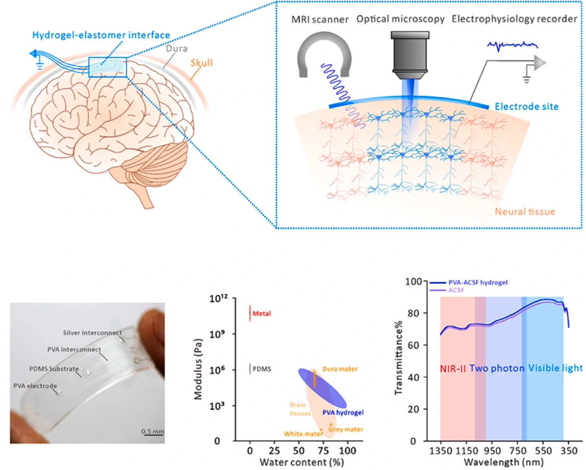
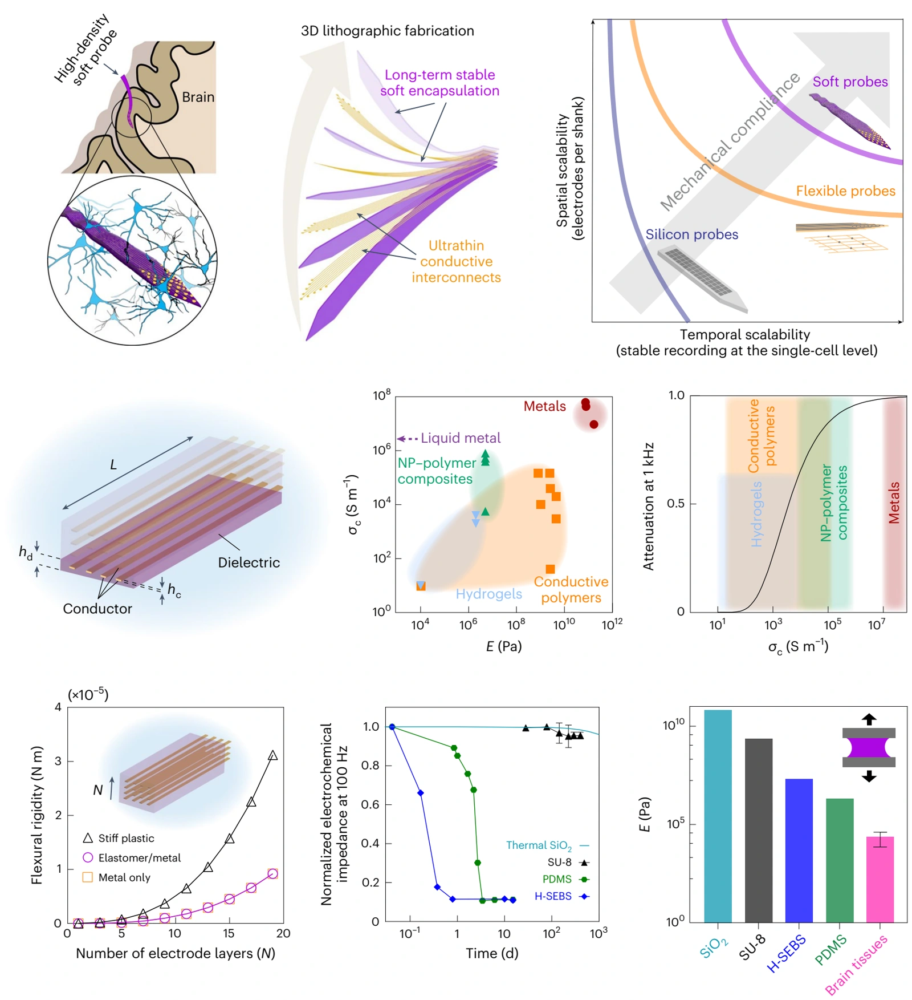
3D spatiotemporally scalable in vivo neural probes based on fluorinated elastomers
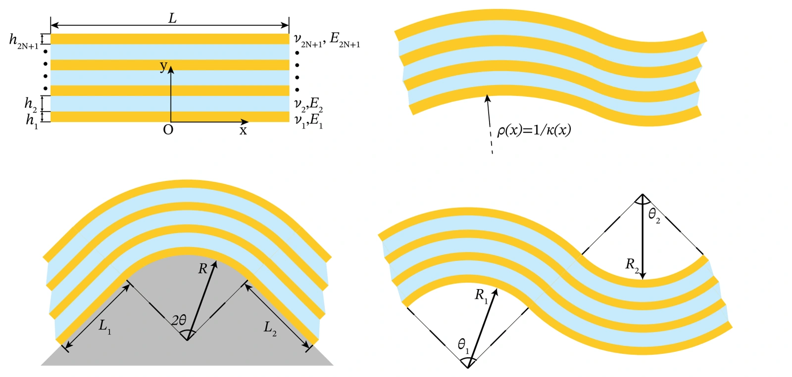
A shear-lag model for laminated beams with extreme modulus mismatch between layers
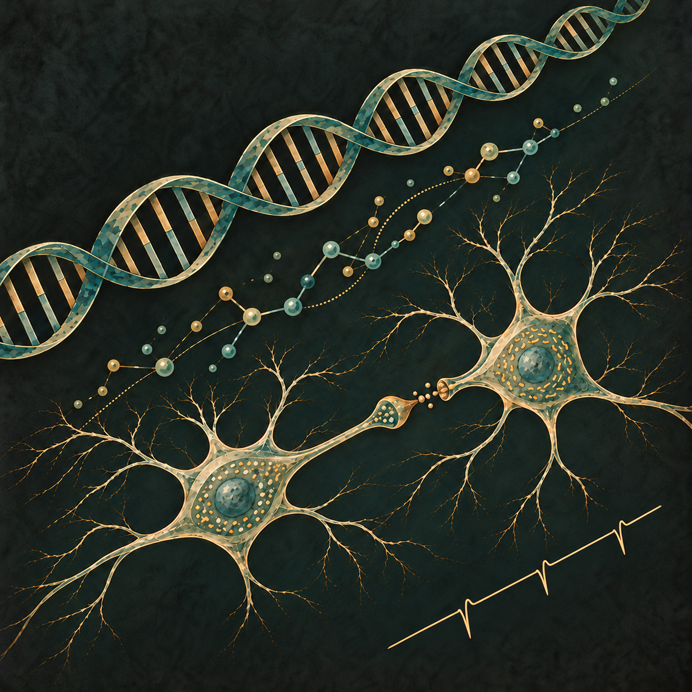
Understand cell dynamics
How do cellular electrical activity, identity, and tissue organization shape function over time?
Related work
1 / 3
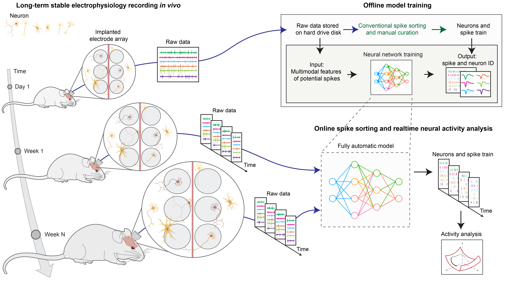
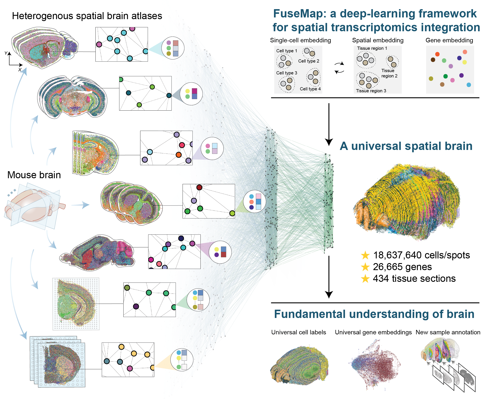
Towards a universal spatial molecular atlas of the mouse brain
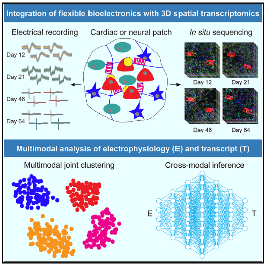
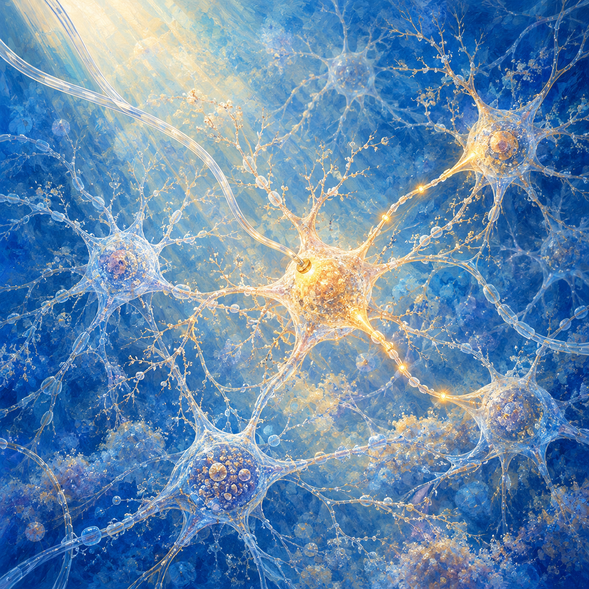